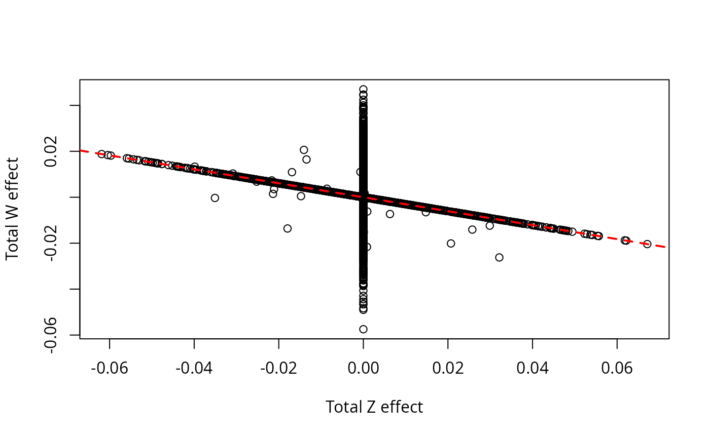

library(GWASBrewer)
library(DiagrammeR)
library(dplyr)
#>
#> Attaching package: 'dplyr'
#> The following objects are masked from 'package:stats':
#>
#> filter, lag
#> The following objects are masked from 'package:base':
#>
#> intersect, setdiff, setequal, union
library(reshape2)
library(ggplot2)
set.seed(1)Introduction
This vignette demonstrates how to use the sim_mv
function to simulate data a few different types of GWAS data.
Introduction to sim_mv
The sim_mv function generates GWAS summary statistics
for multiple continuous traits from a linear structural equation model
encoded as a matrix of direct effects. Variants can be generated with or
without LD. There are also some helper functions for LD-pruning and
generating special kinds of direct effect matrices.
The sim_mv function internally calls a more general
function sim_lf which generates summary statistics given a
latent factor structure for a set of traits.
Throughout this vignette, we will use \(M\) to represent the number of traits and \(J\) to represent the number of variants.
Basic Usage
Input
The sim_mv function has five required arguments:
-
N: The GWAS sample size for each trait. This can be a scalar, vector, matrix, or data frame. If a vector,Nshould have length equal to \(M\). If there are overlapping samples between GWAS,Nshould be an \(M \times M\) matrix or data frame with format described in the “Sample Overlap” section below. -
J: The number of SNPs to simulate (scalar). -
h2: The hertiability of each trait. This can be a scalar or a length \(M\) vector. -
pi: The proportion of SNPs that have a direct effect on each trait. This can be a scalar, a length \(M\) vector, or a matrix with \(J \times M\) matrix (more details on the matrix format can be found in the Effect Size Distribution vignette). -
G: A matrix specifying direct causal effects between traits.Gshould be an \(M\times M\) matrix described below. Alternatively, if there are no causal effects between any traits,Gcan be given as the positive integer \(M\). This is equivalent toG = matrix(0, nrow = M, ncol = M).
There are additional optional arguments:
-
R_EandR_obs: Alternative ways to specify environmental correlation (see “Sample Overlap” section below for more details). -
R_LD: A list of LD blocks (see “Simulating Data with LD”). -
af: Vector of allele frequencies (required ifR_LDis specified). IfR_LDis not specified,afcan be a scalar, vector of lengthJor a function (more details below). IfR_LDis specified,afmust be a vector with length corresponding to the size of the LD pattern (see “Simulating Data with LD”) -
sporadic_pleiotropy: Allow a single variant to have direct effects on multiple traits at random. Defaults toTRUE. -
pi_exact: IfTRUE, the number of direct effect SNPs for each trait will be exactly equal toround(pi*J). Defaults toFALSE. -
h2_exact: IfTRUE, the heritability of each trait will be exactlyh2. Defaults toFALSE. -
est_s: IfTRUE, return estimates ofse(beta_hat). Defaults toFALSEbut we generally recommend settingest_stoTRUEif you will be making use of standard errors. -
snp_effect_functionandsnp_infoare parameters useful for specifying non-default distributions of effect sizes. This is not covered in this vignette but is covered in the Effect Size Distributions vignette.
Output
The sim_mv function returns an object with class
sim_mv. This object contains the following elements:
GWAS summary statistics are contained in two or three matrices:
-
beta_hat: Simulated GWAS effect estimates and standard errors. -
se_beta_hat: True standard errors ofbeta_hat. -
s_estimate: Ifest_s= TRUEthen a simulated estimate ofse_beta_hat.
True marginal and joint, total and direct effects are contained in four matrices:
-
beta_joint: Total causal effects of SNPs on traits. -
beta_marg: Expected marginal association of SNPs on traits.beta_margis the expected value ofbeta_hat. When there is no LD,beta_margandbeta_jointare the same. -
direct_SNP_effects_joint: Direct causal effects of SNPs on traits. Direct means not mediated by other traits. -
direct_SNP_effects_marg: Likebeta_margbut considering only direct rather than total effects.
The relationship between traits is contained in two matrices:
-
direct_trait_effects: Matrix of direct effects between traits. This should be the same as the inputG. -
total_trait_effects: Matrix of total effects between traits.
Trait covariance is described by four matrices:
-
Sigma_G: Genetic variance-covariance matrix, determined by heritability andG. -
Sigma_E: Environmental variance-covariance matrix. This is determined by heritability andR_E. -
trait_corr: Population trait correlation, equal tocov2cor(Sigma_G + Sigma_E). For data produces withsim_mv, trait variance is always equal to 1, sotrait_corr = Sigma_G + Sigma_E. -
R: Correlation in sampling error ofbeta_hatacross traits, equal totrait_corrscaled by a matrix of sample overlap proportions.
Some other pieces of information useful in more complicated scenarios:
-
h2: Realized trait heritability. For data produced withsim_mv, this will always be equal todiag(Sigma_G). However this may not be the case for resampled data (see the Resampling Data vignette). -
pheno_sd: Standard deviation of traits. For data produced withsim_mv, this is always a vector of 1’s. -
snp_info: A data frame of variant information including allele frequency and possibly other information (see the Effect Distribution vignette). -
geno_scale: Equal toalleleif effect sizes are per allele orsdif effect sizes are per genotype SD (i.e. standardized).
The order of the columns of all results corresponds to the order of
traits in G.
Simplest Usage
The simplest thing to do with sim_mv is to generate
summary statistics for \(M\) traits
with no causal relationship with no LD between variants. In the code
below, we generate data for 3 traits and 100,000 variants. Since the
sample size is specified as a scalar, all three GWAS have the same
sample size but there are no overlapping samples. For some variety, we
give each trait a different heritability and a different proportion of
causal variants.
dat_simple <- sim_mv(G = 3, # using the shortcut for specifying unrelated traits.
# equivalent to G = matrix(0, nrow = 3, ncol = 3)
N = 50000, # sample size, same for all three traits
J = 100000, # number of variants
h2 = c(0.1, 0.25, 0.4), # heritability
pi = c(0.01, 0.005, 0.02), # proportion of causal variants
est_s = TRUE # generate standard error estimates.
)
#> SNP effects provided for 100000 SNPs and 3 traits.The sim_mv function always assumes that traits have been
scaled to have variance equal to 1, so effect sizes are interpretable as
the expected change in the trait in units of SD per either alternate
allele (if geno_scale = allele) or per genotype SD (if
geno_scale = sd). In our case,
dat_simple$geno_scale is equal to sd because
no allele frequencies were provided. The realized genetic and
environmental variance matrices are in Sigma_G and
Sigma_E.
dat_simple$Sigma_G
#> [,1] [,2] [,3]
#> [1,] 1.045339e-01 4.515705e-06 0.0005262836
#> [2,] 4.515705e-06 2.530663e-01 0.0009271551
#> [3,] 5.262836e-04 9.271551e-04 0.4429666631
dat_simple$Sigma_E
#> [,1] [,2] [,3]
#> [1,] 0.8954661 0.0000000 0.0000000
#> [2,] 0.0000000 0.7469337 0.0000000
#> [3,] 0.0000000 0.0000000 0.5570333The diagonal of dat_simple$Sigma_G is equal to the trait
heritability (also stored in dat_simple$h2). We can see
that these numbers are close to but not exactly equal to the values
input to the h2 parameter. This is because h2
provides the expected heritability. If we want to force the realized
heritability to be exactly equal to the input h2, we can
use h2_exact = TRUE. The genetic covariance (the
non-diagonal elements of Sigma_G) is slightly non-zero
because the traits share a small number of causal variants by chance. If
we want to prevent this, we can use
sporadic_pleiotropy=FALSE. However, in some cases, it is
not possible to satisfy sporadic_pleiotropy = FALSE and
that option will generate an error.
The simulated summary effect estimates are in
dat_simple$beta_hat and simulated standard error estimates
are in dat_simple$s_estimate. In our case, these will both
be 100,000 by 3 matrices.
head(dat_simple$beta_hat)
#> [,1] [,2] [,3]
#> [1,] 0.0063610849 -0.007271609 0.003926946
#> [2,] 0.0009913487 0.012587585 0.003931295
#> [3,] 0.0031938057 -0.002387450 -0.003170087
#> [4,] 0.0030629600 0.001481305 -0.002369274
#> [5,] 0.0020414224 0.007953421 0.005325885
#> [6,] 0.0030602370 -0.002037463 -0.008673129
head(dat_simple$s_estimate)
#> [,1] [,2] [,3]
#> [1,] 0.004478273 0.004480611 0.004483377
#> [2,] 0.004468891 0.004478611 0.004482622
#> [3,] 0.004472107 0.004466985 0.004465830
#> [4,] 0.004465952 0.004460529 0.004476516
#> [5,] 0.004449150 0.004493462 0.004482853
#> [6,] 0.004480817 0.004464715 0.004479402In actual GWAS data, these two matrices are the only information we
get to observe. Everything else stored in dat_simple is
information that is unobservable in “real” data but useful for
benchmarking analysis methods. The effect estimates in
dat_simple$beta_hat are always estimates of the true
marginal effects in in dat_simple$beta_marg. Since there is
no LD in this data, marginal and joint effects are the same, so you will
find that dat_simple$beta_marg and
dat_simple$beta_joint are identical. We can identify causal
variants as variants with non-zero values of beta_joint.
For example, which(dat_simple$beta_joint[,1] != 0) would
give the indices of variants causal for trait 1.
The estimates in dat_simple$s_estimate are estimates of the
standard error of dat_simple$beta_hat. The true standard
errors are stored in dat_simple$se_beta_hat. If we had left
est_s at its default value of FALSE,
dat_simple would not contain the s_estimate
matrix.
Specifying Causal Relationships Between Traits
The matrix G specifies a linear structural equation
model for a set of traits. To generate a set of \(M\) traits with no causal relationships,
G can be set either equal to M or to an \(M\times M\) matrix of 0’s. Otherwise,
G must be an \(M \times
M\) matrix with G[i,j] specifying the direct linear
effect of trait \(i\) on trait \(j\). The diagonal entries of \(G\) should be 0 (no self effects). An error
will be generated if G specifies a graph that contains
cycles. Since all traits have variance equal to 1, so
G[i,j]^2 is the proportion of trait \(j\) variance explained by the direct effect
of trait \(i\).
For example, the matrix
G <- matrix(c(0, sqrt(0.25), 0, sqrt(0.15),
0, 0, 0, sqrt(0.1),
sqrt(0.2), 0, 0, -sqrt(0.3),
0, 0, 0, 0), nrow = 4, byrow = TRUE)
colnames(G) <- row.names(G) <- c("X", "Y", "Z", "W")
G
#> X Y Z W
#> X 0.0000000 0.5 0 0.3872983
#> Y 0.0000000 0.0 0 0.3162278
#> Z 0.4472136 0.0 0 -0.5477226
#> W 0.0000000 0.0 0 0.0000000corresponds to the graph
To simulate simple data from this graph, we can use
sim_dat1 <- sim_mv(G = G,
N = 50000,
J = 100000,
h2 = c(0.3, 0.3, 0.5, 0.4),
pi = 0.01,
est_s = TRUE)
#> SNP effects provided for 100000 SNPs and 4 traits.In this specification, we have four GWAS with sample size 50,000,
again with no overlapping samples. Since J = 100000 and
pi = 0.01, we expect each trait to have 1000 direct effect
variants.
With causal relationships between traits, there are now some interesting things to notice about the output. First, we can see that there is both genetic and environmental covariance between the traits.
sim_dat1$Sigma_G
#> X Y Z W
#> X 0.28249614 0.14135064 0.2179663 0.03485498
#> Y 0.14135064 0.29912608 0.1089297 0.08886324
#> Z 0.21796635 0.10892974 0.4892269 -0.14942217
#> W 0.03485498 0.08886324 -0.1494222 0.40289524
sim_dat1$Sigma_E
#> X Y Z W
#> X 0.7175039 0.3545701 0.2288111 0.2619020
#> Y 0.3545701 0.7008739 0.1130720 0.2951464
#> Z 0.2288111 0.1130720 0.5107731 -0.1531603
#> W 0.2619020 0.2951464 -0.1531603 0.5971048
sim_dat1$trait_corr
#> X Y Z W
#> X 1.0000000 0.4959207 0.4467774 0.2967570
#> Y 0.4959207 1.0000000 0.2220017 0.3840097
#> Z 0.4467774 0.2220017 1.0000000 -0.3025824
#> W 0.2967570 0.3840097 -0.3025824 1.0000000By default, sim_mv assumes that direct environmental
components of each trait are independent, meaning that the DAG explains
all of the correlation between traits. This is modifiable using the
R_E and R_obs arguments, discussed a bit later
in this vignette.
Relationships between traits are described by two matrices,
direct_trait_effects which is equal to the input
G matrix and total_trait_effects which gives
the total effect of each trait on each other trait. Here we can notice
that the direct effect of \(Z\) on
\(W\) is -0.548 as specified but the
total effect includes the effects mediated by \(X\) and \(Y\) as well, \(-0.548 + 0.447\cdot 0.387 + 0.447\cdot 0.5 \cdot
0.316 = -0.304\).
sim_dat1$direct_trait_effects
#> X Y Z W
#> X 0.0000000 0.5 0 0.3872983
#> Y 0.0000000 0.0 0 0.3162278
#> Z 0.4472136 0.0 0 -0.5477226
#> W 0.0000000 0.0 0 0.0000000
sim_dat1$total_trait_effects
#> X Y Z W
#> X 0.0000000 0.5000000 0 0.5454122
#> Y 0.0000000 0.0000000 0 0.3162278
#> Z 0.4472136 0.2236068 0 -0.3038068
#> W 0.0000000 0.0000000 0 0.0000000We can also use the output to understand which variants have direct
effects on each trait and which have indirect (mediated) effects. The
direct_SNP_effects_joint object gives the direct effect of
each variant on each trait while beta_joint gives the the
total effect of each variant. Direct and total marginal effects are
stored in direct_SNP_effects_marg and
beta_marg. Since we again have no LD, the
_marg and _joint matrices are the same.
Direct SNP effects are always independent across traits while total SNP effects are the sum of direct effects and indirect effects mediated by other traits. We will make some plots to see the difference.
First we plot direct SNP effects on \(Z\) vs direct SNP effects on \(W\)
plot(sim_dat1$direct_SNP_effects_joint[,3], sim_dat1$direct_SNP_effects_joint[,4],
xlab = "Direct Z effect", ylab = "Direct W effect")Most variants have direct effects on at most one of \(Z\) or \(W\) but a small number affect both because
sporadic_pleiotropy = TRUE by default.
Next we plot the total SNP effects on \(Z\) vs the total SNP effects on \(W\). Because \(Z\) has a causal effect on \(W\), all variants with effects on \(Z\) also affect \(W\). The line in the plot has slope equal
to the total effect of \(Z\) on \(W\). The majority of SNPs that have
non-zero effect on \(Z\) fall exactly
on this line. With sporadic_pleiotropy= FALSE, all of the
variants with non-zero effect on \(Z\)
would fall on this line. The variants on the vertical line at 0 are
variants with non-zero direct effect on \(W\) but no direct effect on \(Z\).
plot(sim_dat1$beta_joint[,3], sim_dat1$beta_joint[,4],
xlab = "Total Z effect", ylab = "Total W effect")
abline(0, sim_dat1$total_trait_effects[3,4], col = "red", lty = 2, lwd = 2)
Specifying Allele Frequencies
Allele frequencies can be specified using the af
argument which can accept a scalar, a vector of length \(J\), or a function that takes a single
argument and returns a vector of allele frequencies with length
determined by the argument. If af is a scalar, the same
allele frequency is used for all variants. The function specification is
used in the example below. If the af argument is provided,
sim_mv will return all results on the per-allele scale and
the geno_scale element of the returned object will be equal
to allele. The snp_info element of the
returned object will also include the allele frequency of each
variant.
sim_dat2 <- sim_mv(G = G,
N = 50000,
J = 10000,
h2 = c(0.3, 0.3, 0.5, 0.4),
pi = 0.01,
af = function(n){rbeta(n, 1, 5)})
#> SNP effects provided for 10000 SNPs and 4 traits.
sim_dat2$geno_scale
#> [1] "allele"
head(sim_dat2$snp_info)
#> SNP AF
#> 1 1 0.05448172
#> 2 2 0.52558863
#> 3 3 0.02522715
#> 4 4 0.29653930
#> 5 5 0.29400173
#> 6 6 0.09964018Simulating Data with LD
The sim_mv function can be used to generate data with LD
by inputting a list of LD matrices and corresponding allele frequency
information. The function will work fastest if the LD matrix is broken
into smallish independent blocks. The input data format for the LD
pattern is a list of either a) matrices, b) sparse matrices (class
dsCMatrix) or c) eigen decompositions (class
eigen). R_LD is interpreted as providing
blocks in a block-diagonal SNP correlation matrix.
Importantly, the supplied LD pattern does not have to be the same
size as the number of SNPs we wish to generate (J). It will
be repeated or subsetted as necessary to create an LD pattern of the
appropriate size.
The package contains a built-in data set containing the LD pattern from Chromosome 19 in HapMap3 broken into 39 blocks. This LD pattern was estimated from the HapMap3 European subset using LDShrink. This data set can also be downloaded here. The LD pattern must be accompanied by a vector of allele frequencies with length equal to the total size of the LD pattern (i.e. the sum of the size of each block in the list).
Let’s look at the built-in LD data
data("ld_mat_list")
data("AF")
length(ld_mat_list)
#> [1] 39
sapply(ld_mat_list, class)
#> [1] "dsCMatrix" "dsCMatrix" "dsCMatrix" "dsCMatrix" "dsCMatrix" "dsCMatrix"
#> [7] "dsCMatrix" "dsCMatrix" "dsCMatrix" "dsCMatrix" "dsCMatrix" "dsCMatrix"
#> [13] "dsCMatrix" "dsCMatrix" "dsCMatrix" "dsCMatrix" "dsCMatrix" "dsCMatrix"
#> [19] "dsCMatrix" "dsCMatrix" "dsCMatrix" "dsCMatrix" "dsCMatrix" "dsCMatrix"
#> [25] "dsCMatrix" "dsCMatrix" "dsCMatrix" "dsCMatrix" "dsCMatrix" "dsCMatrix"
#> [31] "dsCMatrix" "dsCMatrix" "dsCMatrix" "dsCMatrix" "dsCMatrix" "dsCMatrix"
#> [37] "dsCMatrix" "dsCMatrix" "dsCMatrix"
# This prints the number of SNPs in each block
sapply(ld_mat_list, nrow)
#> [1] 140 519 339 435 523 280 675 325 651 548 274 483 442 744 460 177 469 173 358
#> [20] 564 392 737 596 818 307 863 276 435 204 364 480 381 757 844 753 656 483 856
#> [39] 709
sapply(ld_mat_list, nrow) %>% sum()
#> [1] 19490
length(AF)
#> [1] 19490The LD pattern covers 19,490 SNPs, equal to the length of the
AF vector. The built-in LD pattern corresponds to a density
of about 1.2 million variants per genome. However, for this example, we
will generate data for only 100k variants. This means that causal
effects will be denser than they might be in more realistic data with
the same number of effect variants.
set.seed(10)
sim_dat1_LD <- sim_mv(G = G,
J = 1e5,
N = 50000,
h2 = c(0.3, 0.3, 0.5, 0.4),
pi = 0.01,
R_LD = ld_mat_list,
af = AF)
#> SNP effects provided for 100000 SNPs and 4 traits.In data with LD, the _joint objects and
_marg objects are not identical. For example, we can
compare beta_joint and beta_marg for the third
trait (\(Z\)).
Variants with non-zero values of beta_joint[,3] have
causal effects on \(Z\) while those
with non-zero values of beta_marg[,3] have non-zero
marginal association with \(Z\),
meaning that they are in LD with at least one causal variant. In the
plot, we see that many variants with no causal effect have non-zero
marginal association, which is expected. The causal variants don’t fall
exactly on the red line because, multiple causal variants may fall into
the same LD block.
LD-Pruning, LD-Proxies, and LD Matrix Extraction
Many post-GWAS applications such as Mendelian randomization and
polygenic risk score construction require an LD-pruned set of variants.
GWASBrewer contains a few LD-related functions to help with
pruning and testing methods that require input LD matrices. Note that
all of these methods use the true LD pattern rather than estimated
LD.
The sim_ld_prune function will perform LD-clumping on
simulated data, prioritizing variants according to a supplied
pvalue vector. Although this argument is called
pvalue, it can be any numeric vector used to prioritize
variants. The pvalue argument can also accept an integer.
If pvalue = i, variants will be prioritized according to
the p-value for the ith trait in the simulated data. If
pvalue is omitted, variants will be prioritized randomly
(so a different result will be obtained each re-run unless a seed is
set).
To speed up performance, if you only need variants with \(p\)-value less than a certain threshold,
supply the pvalue_thresh argument. Below we prune based on
the p-values for trait \(Z\) in two
equivalent ways.
pruned_set1 <- sim_ld_prune(dat = sim_dat1_LD,
pvalue = 3,
R_LD = ld_mat_list,
r2_thresh = 0.1,
pval_thresh = 1e-6)
#> Prioritizing variants based on p-value for trait 3
length(pruned_set1)
#> [1] 354
pval3 <- with(sim_dat1_LD, 2*pnorm(-abs(beta_hat[,3]/se_beta_hat[,3])))
pruned_set2 <- sim_ld_prune(dat = sim_dat1_LD,
pvalue = pval3,
R_LD = ld_mat_list,
r2_thresh = 0.1,
pval_thresh = 1e-6)
all.equal(pruned_set1, pruned_set2)
#> [1] TRUEsim_ld_prune returns a vector of indices corresponding
to an LD-pruned set of variants.
The sim_ld_proxy function will return indices of
LD-proxies (variants with LD above a given threshold) with a supplied
set of variants. Here we extract proxies for a few arbitrary variants.
The return_mat option will cause the function to return the
LD matrix for the proxies as well as the indices of proxies
ld_proxies <- sim_ld_proxy(sim_dat1_LD, index = c(100, 400, 600), R_LD = ld_mat_list, r2_thresh = 0.64, return_mat = TRUE)
ld_proxies
#> [[1]]
#> [[1]]$index
#> [1] 100
#>
#> [[1]]$proxy_index
#> [1] 98 99
#>
#> [[1]]$Rproxy
#> 100 98 99
#> 100 1.0000000 0.9568668 0.9745924
#> 98 0.9568668 1.0000000 0.9798682
#> 99 0.9745924 0.9798682 1.0000000
#>
#>
#> [[2]]
#> [[2]]$index
#> [1] 400
#>
#> [[2]]$proxy_index
#> [1] 395 396 397 398 399 401 402
#>
#> [[2]]$Rproxy
#> 400 395 396 397 398 399 401
#> 400 1.0000000 0.9495092 0.9661446 0.9793188 0.9730871 0.9306611 0.9105497
#> 395 0.9495092 1.0000000 0.9812294 0.9675572 0.9742288 0.9302869 0.8876271
#> 396 0.9661446 0.9812294 1.0000000 0.9841205 0.9905250 0.9454487 0.9054550
#> 397 0.9793188 0.9675572 0.9841205 1.0000000 0.9810106 0.9367627 0.9175545
#> 398 0.9730871 0.9742288 0.9905250 0.9810106 1.0000000 0.9522425 0.9119614
#> 399 0.9306611 0.9302869 0.9454487 0.9367627 0.9522425 1.0000000 0.8731959
#> 401 0.9105497 0.8876271 0.9054550 0.9175545 0.9119614 0.8731959 1.0000000
#> 402 0.8080771 0.7821419 0.7934351 0.8097815 0.7991366 0.7643812 0.7522628
#> 402
#> 400 0.8080771
#> 395 0.7821419
#> 396 0.7934351
#> 397 0.8097815
#> 398 0.7991366
#> 399 0.7643812
#> 401 0.7522628
#> 402 1.0000000
#>
#>
#> [[3]]
#> [[3]]$index
#> [1] 600
#>
#> [[3]]$proxy_index
#> [1] 601 606
#>
#> [[3]]$Rproxy
#> 600 601 606
#> 600 1.0000000 -0.8044757 0.8670863
#> 601 -0.8044757 1.0000000 -0.7193148
#> 606 0.8670863 -0.7193148 1.0000000Finally, the sim_extract_ld function will extract the LD
matrix for a set of variants.
ld_mat1 <- sim_extract_ld(sim_dat1_LD, index = 600:606, R_LD = ld_mat_list)
ld_mat1
#> 600 601 602 603 604 605
#> 600 1.0000000 -0.8044757 -0.6715969 -0.7920287 -0.7323562 -0.4605856
#> 601 -0.8044757 1.0000000 0.8354364 0.9791149 0.9404418 0.6067155
#> 602 -0.6715969 0.8354364 1.0000000 0.8138201 0.7891286 0.6555054
#> 603 -0.7920287 0.9791149 0.8138201 1.0000000 0.9363088 0.5849580
#> 604 -0.7323562 0.9404418 0.7891286 0.9363088 1.0000000 0.5890082
#> 605 -0.4605856 0.6067155 0.6555054 0.5849580 0.5890082 1.0000000
#> 606 0.8670863 -0.7193148 -0.5968298 -0.7200977 -0.7469780 -0.3902207
#> 606
#> 600 0.8670863
#> 601 -0.7193148
#> 602 -0.5968298
#> 603 -0.7200977
#> 604 -0.7469780
#> 605 -0.3902207
#> 606 1.0000000Specifying Sample Size, Sample Overlap, and Environmental Correlation
If two GWAS are performed on different traits using overlapping samples, the sampling errors of effect estimates will be correlated. If the two GWAS have sample sizes \(N_1\) and \(N_2\) with \(N_c\) overlapping samples, then the correlation of \(\hat{z}_{1j}\) and \(\hat{z}_{2j}\), \(z\)-scores for variant \(j\) in study 1 and study 2, is approximately \(\frac{N_c}{\sqrt{N_1 N_2}} \rho_{1,2}\) where \(\rho_{1,2}\) is the observational trait correlation (assuming the studies are conducted in the same super population). Below we describe how to specify the observational correlation and sample overlap.
Specifying Sample Size and Sample Overlap
The sample size argument, N, can be specified as a
scalar, a vector, a matrix, or a data frame. Both the scalar and matrix
specification indicate no overlapping samples between GWAS. To specify
sample overlap, we need to use the matrix or data frame formats. If
N is a matrix, it should have dimension \(M\times M\) with N[i,i] giving
the sample size of study \(i\) and
N[i,j] giving the number of samples that are in both study
\(i\) and study \(j\). In data frame format, \(N\) should have columns named
trait_1, … trait_[M] and N. The
trait_[x] columns will be interpreted as logicals and the
N column should give the number of samples in each
combination of studies. For example, the following specifications for
two traits are equivalent.
N <- matrix(c(60000, 30000, 30000, 60000), nrow = 2, ncol = 2)
N
#> [,1] [,2]
#> [1,] 60000 30000
#> [2,] 30000 60000
Ndf <- data.frame(trait_1 = c(1, 1, 0),
trait_2 = c(0, 1, 1),
N = rep(30000, 3))
Ndf
#> trait_1 trait_2 N
#> 1 1 0 30000
#> 2 1 1 30000
#> 3 0 1 30000When there are more than two traits, the data frame format contains
more information than the matrix format. This format is required by the
resample_inddata function (covered in a different
vignette). For sim_mv, either format is sufficient.
Using Sample Size 0 to Omit Traits
In some circumstances, we may want to generate true effects for a
trait but not generate summary statistics. In this case, we can use a
sample size of 0. Setting N = 0 will mean that
beta_hat, s_estimate, se_beta_hat
will be NA for all traits. Alternatively, if N
is a vector with some 0 elements, only those traits will be missing.
Finally, if N is a matrix, we can set the row and column
corresponding to the omitted trait to zero. For example, in the
specification below, we omit summary statistics for \(Z\), the third trait. We also specify some
overlapping samples in studies for the other three traits.
N <- matrix(c(50000, 10000, 0, 0,
10000, 40000, 0, 10000,
0, 0, 0, 0,
0, 10000, 0, 20000), nrow = 4)
N
#> [,1] [,2] [,3] [,4]
#> [1,] 50000 10000 0 0
#> [2,] 10000 40000 0 10000
#> [3,] 0 0 0 0
#> [4,] 0 10000 0 20000
sim_dat2 <- sim_mv(G = G,
N = N,
J = 100000,
h2 = c(0.3, 0.3, 0.5, 0.4),
pi = 0.01,
est_s = TRUE)
#> SNP effects provided for 100000 SNPs and 4 traits.
head(sim_dat2$beta_hat)
#> [,1] [,2] [,3] [,4]
#> [1,] 1.258828e-03 -0.002383374 NA 1.074629e-02
#> [2,] -8.580051e-03 -0.015482893 NA -7.281355e-03
#> [3,] -2.515356e-03 -0.001070368 NA -2.189328e-02
#> [4,] 5.422213e-05 -0.003164621 NA 8.103383e-03
#> [5,] -8.150978e-03 -0.005807492 NA 5.922625e-05
#> [6,] -5.861632e-03 -0.003012872 NA 3.302201e-03
head(sim_dat2$se_beta_hat)
#> [,1] [,2] [,3] [,4]
#> [1,] 0.004472136 0.005 NA 0.007071068
#> [2,] 0.004472136 0.005 NA 0.007071068
#> [3,] 0.004472136 0.005 NA 0.007071068
#> [4,] 0.004472136 0.005 NA 0.007071068
#> [5,] 0.004472136 0.005 NA 0.007071068
#> [6,] 0.004472136 0.005 NA 0.007071068
head(sim_dat2$s_estimate)
#> [,1] [,2] [,3] [,4]
#> [1,] 0.004453566 0.004976698 NA 0.007050114
#> [2,] 0.004471810 0.005008104 NA 0.007081267
#> [3,] 0.004471716 0.004976063 NA 0.007033821
#> [4,] 0.004459041 0.004982154 NA 0.007068942
#> [5,] 0.004480086 0.004961544 NA 0.007006829
#> [6,] 0.004472674 0.004987358 NA 0.007045390Understanding Genetic and Environmental Covariance
In the model used by GWASBrewer, each trait has a direct
genetic component, a direct environmental component, and components from
effects of other traits in the DAG. For example, in the four trait DAG
we have been working with, the underlying model really looks like
this:
In this picture, \(G_x\), \(G_y\), \(G_z\), and \(G_w\) are direct genetic components of each trait and \(E_x\), \(E_y\), \(E_z\), and \(E_w\) are direct environmental components. We always assume that the direct genetic components are independent of each other and of the environmental components. By default, we also assume that the environmental components are independent of each other (so all blue circles in the picture above are mutually independent). This means that, by default, the observational trait correlation is explained completely by the specified DAG. In this case, the default trait correlation is
sim_dat1$trait_corr
#> X Y Z W
#> X 1.0000000 0.4959207 0.4467774 0.2967570
#> Y 0.4959207 1.0000000 0.2220017 0.3840097
#> Z 0.4467774 0.2220017 1.0000000 -0.3025824
#> W 0.2967570 0.3840097 -0.3025824 1.0000000The simulation data object contains four matrices that describe trait
covarince, Sigma_E, the total environmental trait
covariance, Sigma_G the total genetic trait covariance,
trait_corr, the trait correlation equal to
Sigma_G + Sigma_E, and R, the row correlation
of beta_hat. R is equal to
trait_corr scaled by the a matrix of sample overlap
proportions.
Sigma_G is always determined by the DAG and the
heritabilities. Currently, there are two ways to modify
Sigma_E. The first is to specify R_obs which
directly specifies the observational trait correlation
(trait_corr). In some cases, it is possible to request an
observational correlation matrix that is impossible. For example, in our
example, \(Z\) has a strong negative
effect on \(W\) so it is not possible
that all four traits are mutually strongly positively correlated. We can
get an error using
R_obs <- matrix(0.8, nrow = 4, ncol = 4)
diag(R_obs) <- 1
wont_run <- sim_mv(G = G,
J = 50000,
N = 60000,
h2 = c(0.3, 0.3, 0.5, 0.4),
pi = 1000/50000,
R_obs = R_obs )
#> Error in value[[3L]](cond): R_obs is incompatible with trait relationships and heritability.A quick way to find out if your desired observational correlation is
feasible is to compute R_obs - Sigma_G and check that this
matrix is positive definite (i.e. check that it has all positive
eigenvalues).
An alternative way to specify the environmental correlation is to
specify R_E which gives the total correlation of
environmental components, i.e. cov2cor(Sigma_E).
Importantly, R_E is the correlation of the
total environmental components, not the direct
environmental components shown in the graph above. Any positive definite
correlation matrix is a valid input for R_E, so we could
use
R_E <- matrix(0.8, nrow = 4, ncol = 4)
diag(R_E) <- 1
sim_dat3 <- sim_mv(G = G,
J = 50000,
N = 60000,
h2 = c(0.3, 0.3, 0.5, 0.4),
pi = 1000/50000,
R_E = R_E)
#> SNP effects provided for 50000 SNPs and 4 traits.which results in a total trait correlation of
sim_dat3$trait_corr
#> X Y Z W
#> X 1.0000000 0.7109713 0.7020261 0.5677883
#> Y 0.7109713 1.0000000 0.5966303 0.6110510
#> Z 0.7020261 0.5966303 1.0000000 0.3158510
#> W 0.5677883 0.6110510 0.3158510 1.0000000It is not currently possible to specify the correlation of the direct environmental components.
Note that the environmental covariance and observational trait
correlation only influence the distribution of summary statistics if
there is overlap between GWAS samples. This means that
sim_dat3 in the previous code block is actually a sample
from exactly the same distribution as sim_dat1, because our
specification has no sample overlap. We can tell that this is the case
because sim_dat4$R is the identity, indicating that all
summary statistics are independent across traits.
sim_dat3$R
#> [,1] [,2] [,3] [,4]
#> [1,] 1 0 0 0
#> [2,] 0 1 0 0
#> [3,] 0 0 1 0
#> [4,] 0 0 0 1By contrast, in sim_dat2, we did have sample overlap, so
there is non-zero correlation between the summary statistics.
sim_dat2$R
#> [,1] [,2] [,3] [,4]
#> [1,] 1.0000000 0.1120147 0 0.0000000
#> [2,] 0.1120147 1.0000000 0 0.1355998
#> [3,] 0.0000000 0.0000000 0 0.0000000
#> [4,] 0.0000000 0.1355998 0 1.0000000